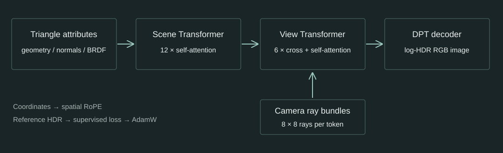

Transformer 如何学习渲染
以 SIGGRAPH 2025 RenderFormer 为应用实例，按输入、网络、监督信号与评估理解学习过程。
1. 注意力在计算什么
每个 token 产生查询 Q、键 K 和值 V。查询与键的相似度决定聚合权重，值携带被聚合的信息；多头注意力让模型同时学习多种关系。
Attention(Q, K, V) = softmax(QKᵀ / √dₖ) V这是基础形式。RenderFormer 还使用 QK 归一化、空间 RoPE、残差与前馈网络。注意力权重不能直接解释为物理光能比例。
2. 场景怎样变成 token
| 输入 | 表示 | 进入网络的方式 |
|---|---|---|
| 三角形位置 | 3 个顶点，共 9 维 | 空间位置编码作用于注意力 |
| 顶点法线 | 3 个法线，共 9 维 | 位置编码、线性投影与归一化 |
| 反射与发光 | 漫反射 RGB、镜面 RGB、粗糙度、发光 RGB | 材质嵌入与法线嵌入组合 |
| 相机 | 位置、姿态与视场角 | 生成每组 8×8 条像素射线 |
论文主方法的常量材质合计 10 维。当前公开 Base 权重采用 13 通道、32×32 三角形纹理块接口；原论文描述与实际 checkpoint 输入配置需要分别记录。
3. 两个阶段怎样协作

第一阶段在三角形之间建立与视角无关的内部表示。第二阶段让射线束查询场景特征，再通过射线束之间的自注意力交换上下文；DPT 将这些特征解码为图像。内部 token 不能逐通道直接当作原始材质或法线解释。
4. 监督信号与参数更新
同一份场景和相机送入参考渲染器与模型。参考图提供线性 HDR 监督；对数变换减少亮高光对损失的支配，再用感知损失约束图像差异。
L = L1(log-HDR prediction, log10(1 + HDR reference)) + 0.05 × LPIPS作者维护的发布训练代码使用 VGG LPIPS，感知项的代理图为 clamp(log₂(1+HDR), 0, 1)，并采用 AdamW、学习率预热与梯度裁剪。具体批量、训练步数、精度及初始化以运行记录为准。
课程训练限定在 Cornell 场景族，观察改变材质、立方体位置和光源后，模型能否在留出配置上重建图像。这不等同于复现论文数百万场景的训练，也不能证明对任意复杂场景泛化。
5. 怎样判断学到了什么
训练、验证和测试按完整场景配置划分，同一配置的相近视图不拆到不同集合。用验证集选择检查点，最后比较未参与训练的配置。
训练前后必须使用相同参考、相机、分辨率与显示变换。PSNR、SSIM 与局部结构对照一起报告，避免整体亮度变化掩盖边缘和几何错误。指标要说明颜色空间、色调映射与取值范围。
6. 原生复杂场景的边界
原生 Sponza 包含大量三角形、图像纹理、法线贴图和透明材质。这些条件超过 V1 原始训练与部分导出接口的支持范围。若模型输入无法保留同样的场景语义，不能直接把它与原生参考的差值当作纯模型误差。
复杂场景的结果用于分析规模、输入表示与光照条件的限制。Cornell 训练中得到的改善，只在实际验证过的条件内成立。